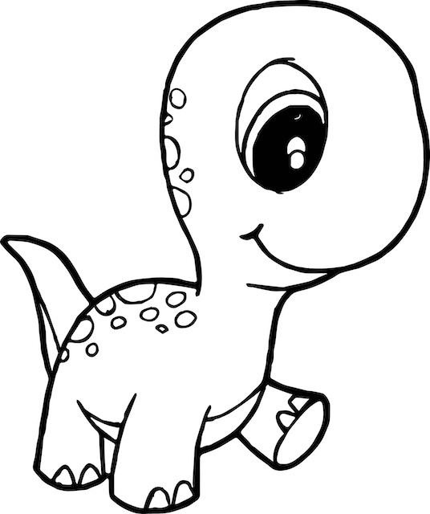

Adoptable Animals!
This is Reginald the Dino. He is a herbivore and has a playful personality. Up to date on all of his shots and requires little training. A perfect starter pet!
This is Rex. He is an older dinosaur and requires some extra love and attention! Great with kids, keep babies and other small pets away [he can be grumpy :(]

This is Octavia. She is carnivorous; not a good starter dino for the inexperienced. Great with kids, though.
This is Animal. A newborn requiring full house/yard training. Can be trained on a vegetarian diet if it includes Beyond or Impossible 'meat'.
This is Speed Racer. Requires a large aquatic environment (minimum 10000 gallons) with plenty of stimulation! Watch them swim laps all day!